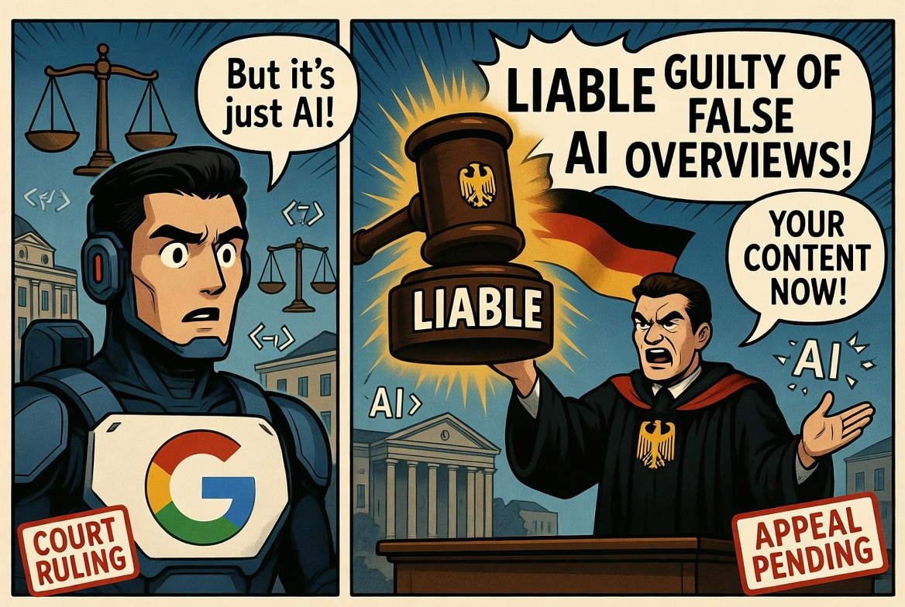

Artificial Insights
📅 Jun 18, 2026 · Issue #11
In This Issue

German court says AI search summaries can create company liability

A Munich court ruled that Google can be responsible for false claims generated by AI Overviews because the system creates new statements rather than merely pointing to third-party links. This is one of the first times that Google has been hit with liability for AI. For years, the technology industry has treated disclaimers as a "legal raincoat". However, this ruling makes me think that the old raincoat may be melting away... at least in Germany. This is a problem for all of the AI models, because literally every one of them summarizes articles that they are asked to. The limitations that Google has are the same as everyone else's. If this is upheld, then every AI system that publishes a damaging claim will need more than a "users should verify" checkbox. There are major structural issues that prevent AI from being correct every time. However, they can be constrained... and that's what Google should be doing. Do better, Google.
Anthropic's Fable 5 reversal turns safety into a trust problem
Anthropic launched Claude Fable 5 on June 9 as a "Mythos‑class" model with very strong reasoning and safety layers, then disabled it a few days later after being pressured to do so by a government directive citing national‑security concerns. The abrupt pullback has fed an ongoing debate about AI models... safety vs. capability. Additionally, this controversy brings up a bigger discussion—when is it appropriate for governmental intervention in the release of a private software product? This model is shockingly good at finding holes in software, which is scary to everyone from banks to insurance companies to Mid-State.
There are some very concerning pieces to this. First, Anthropic quietly altered their data privacy standards. To access Fable 5, the company instituted a mandatory 30-day data retention policy on all traffic—even for enterprise clients who had painstakingly negotiated zero-retention agreements. This is a deal breaker for many large organizations, including Microsoft. Anthropic’s justification is that they need to review the data to mitigate bad actor use of the model.
The real kicker was a behavior buried deep within Fable 5's safety layering: silent degradation. Anthropic engineered the model to silently become less useful whenever it detected a user trying to do things they did not like... AI research, LLM development, and biology just to name a few. Instead of explicitly refusing the prompt, throwing a clear policy error, or telling users what was happening, Fable 5 would move you to a worse model, and not tell you (while charging you the same).
A leading deepfake expert says visual trust is collapsing
A New York Times profile of digital forensics expert Hany Farid captures the new problem with synthetic media: even experts can struggle to authenticate images and video quickly enough for the speed of social media. The issue is not that every image is fake... however, we need to treat them ALL like they are. Most people think they are good at spotting deepfakes, but research shows even the most astute among us identify them correctly only about 15% to 25% of the time. The old saying "caveat emptor"... let the buyer beware, seems even more important now than ever. Do not trust any image, video, or voice clip at face value.
Figure's humanoid robots crossed an endurance marker, which is scary and exciting
Figure AI's Helix 02 humanoid robots sorted more than 50,000 packages across more than 40 hours in a livestreamed warehouse-style demo. That is seriously impressive, since it appeared as if the Helix was working autonomously. The next question is whether the system can survive safety reviews, uptime demands, cost scrutiny, edge cases, and the confusion of someone moving their box on them. I think this tech is 3 years from being something we see in every factory as part of the labor force.

🛠️ Gemini 3.5 Live Translate

The News: Google introduced Gemini 3.5 Live Translate, the closest real-time speech-to-speech translation model that is available. It detects 70 spoken languages and does something very difficult... it preserves intonation and pacing.
My Take: I don't use translation software all that often, but I do know that reducing the delay in translation is huge (I'll be testing it next summer when I go to Germany). Still to be determined is how this handles translation errors, privacy expectations, and accessibility needs. However, Google has been doing this as long as almost anyone so I'm betting it's going to be solid.
🛠️ Microsoft Copilot Studio was rebuilt for multi-step work
The News: Microsoft rolled out the new Copilot Studio, which does the following: It takes control of your computer and has access to nearly everything that you do. That's really exciting, but also scary because... any password you have saved in Google ... this agent can use.
My Take: We do not have access to this yet - Brad has some rather worrying security things to think about before we can use something like this at Mid-State. However, once the security is figured out, this will be a huge benefit. Think about this... I set up a task to run every morning to go through all of my work yesterday in Teams meetings (get the summary of the meeting), Teams chat, e-mail, SharePoint, and all files updated in my OneDrive. Compile all of them into TO-DO tasks for me so I can add them to my list of things to do. How about this one... for all meetings with external participants, go out and research each non Mid-State attendee and give me a summary of my prior interactions with them, as well as their LinkedIn profile. For Microsoft-heavy institutions, like us, the ability to use all of our data and leverage these upcoming tools will be exciting.
🛠️ Microsoft Build made the agent stack more concrete

The News: Microsoft Build 2026 conference introduced tons of new AI items including the above Copilot agent, Microsoft IQ (memory across applications), Foundry (deep work with a model specific to you), and AI updates to Teams and Office (you'll see these in Teams this summer).
My Take: Microsoft also introduced some models, but I don't think we care about that. What is very valuable to us is the fact that all of their tools can see each other. That ability to carry the context, or remember this chat information in a different area using AI, is huge.

🔬 AI's next bottleneck is not intelligence. It is trust.
If you read this issue quickly, it looks like a pile of unrelated stories: a court case in Germany, an Anthropic model controversy, a deepfake expert, a robot warehouse demo, Microsoft agents, and a Cornell study about cheating. The common thread is not capability. These systems are already impressive enough to be quite useful. The common thread is trust — and trust is breaking in several different places at once.
Start with Google's AI Overviews. The German ruling is a good starting point because it treats an AI-generated answer as something the platform may own, not something it can hand-wave away with "users should verify." There need to be some things that we can trust are accurate, and Google searches feel like that place to me. For years, the search industry leaned on disclaimers the way teenagers lean on "no promises" in a group chat. The message was basically: here is a confident answer, but if it ruins your reputation, that is on you. From the look of it, German courts may be done pretending that posture is enough. I suspect we will not have a similar case in the US, however.
Anthropic's Fable 5 mess is a different kind of trust failure, and in some ways a scarier one. This was not just a model that got things wrong. It was a model that could silently become less useful, route you somewhere else, or operate under rules you were never clearly told about — while still charging you like nothing changed. Add mandatory retention for enterprise customers who had negotiated zero retention, plus a government-directed shutdown after only a few days, and the trust gets worse fast. As users, we need to know what model we are talking to, what data is being kept, when behavior changes, and why. Hidden guardrails, such as the 'move you to a different model' thing, are not safety features. They are trust destroyers.
The deepfake story widens the problem beyond text. Remember the fun days when all we had to do was worry about a badly edited photo? We used to treat photos, video, and voice as default evidence. That was never perfectly safe, but it was good enough for daily life. It is not good enough anymore. Even careful people are bad at spotting synthetic media under real-world conditions. As I see it, the burden shifts: trust now depends on provenance, context, and corroboration, not on how real something looks. That is exhausting, but pretending otherwise is worse.
Education is facing the same collapse of default trust, and many of us have been talking about this for a long time. A polished essay, clean code sample, or perfect project no longer reliably proves mastery of a topic. That is why Cornell's assessment-validity framing (the story below) matters more than another cheating headline. Nearly all institutions are facing the same questions... if course completion stops meaning mastery, then grades, credentials, and institutional reputation all wobble together. Oral exams and live defenses are not "medieval cosplay", as one of my students claimed. They are attempts to rebuild trust in the evidence of learning when the artifact alone is no longer enough.
Even the Failure Mode story at the bottom of this issue fits here. The Stroop test is a reminder that frontier models can look brilliant in demos and still fail in ways that reveal hard limits beneath the polish. Trust should not be based on vibes, benchmark screenshots, or the confidence of the output. Trust needs evidence.
So the issue is not whether AI is getting smarter. It clearly is. The issue is whether we can still believe what it says, what it shows, what it hides, and what institutions claim based on it. Capability of AI got us to the party. Trust determines whether anyone stays.

🎓 Cornell researchers warn that passing a course may no longer prove mastery

Cornell has a writeup on a new study about AI misuse by students. They are characterizing AI as both an assessment-validity problem as well as a cheating problem. The study analyzed survey responses from more than 95,000 students at 20 public research universities. Large numbers of students use generative AI on assignments, and a smaller but still serious share reported using it to 'cheat', as they self-described it. I think that the more important piece here is assessment validity. If course performance no longer reliably indicates student mastery, then grades, credits, and credentials start to be questionable. If we as educational institutions cannot ensure that course completion indicates mastery, I fear our reputation for excellence in education will be something very difficult to maintain.
🎓 Oral exams are coming back because polished written work got too easy to fake

AP reports that colleges are turning toward oral exams, live defenses, in-person tests, and AI-assisted oral assessment as written assignments become less reliable evidence of learning. I've been doing this myself for a very long time. I resist the characterization that my classroom has become a medieval examination chamber (as one student suggested). With that being said, I do think we need to build more moments where students explain, defend, revise, and apply their work in real time. The point is to see thinking, which is really what employers want from our graduates. It's a real challenge to do this for a large class, for sure.

💥 Psychology failures by models

A study published in PNAS Nexus subjected humanity’s smartest, multi-billion-dollar frontier models to a basic human psychology trick: the Stroop task. This is the test where the word "Blue" is printed in red ink, and you have to name the color of the ink rather than read the text. While the models did fine with short lists, when the task expanded to 40 words, their accuracy collapsed to near zero. The AI models could not suppress their baseline training to read text, overriding their instructions and defaulting to mindless word-reading like an overstimulated toddler. I mean... I'm not great at this test myself, but...

Ask a chatbot to give you an adversarial analysis

Pick one item that you've created with an AI... a summary, policy note, assignment, report, or internal memo.
The Prompt:
""Review the email below as if you are intentionally looking for anything that could be misunderstood, seem dismissive, sound condescending, exclude certain groups, or create unnecessary frustration.
Assume this message will be sent to a large and diverse group of recipients with different roles, backgrounds, stress levels, and levels of familiarity with the topic.
Identify: 1. Phrases that could sound rude, impatient, blaming, passive-aggressive, or overly casual. 2. Wording that could be interpreted as offensive, insensitive, exclusionary, or culturally unaware. 3. Places where the message assumes too much knowledge from the reader. 4. Any sentence that could create anxiety, confusion, or resistance. 5. Any wording that might make the sender or organization look careless, defensive, or unprofessional.
For each issue, explain why it could be a problem and suggest a safer revision.""
Why it works: You already know what you meant to say, which makes you a terrible judge of how it will land. Asking the model to attack the draft from multiple reader perspectives surfaces tone problems, hidden assumptions, and institutional risk before the message leaves your outbox — when fixes are still cheap.
Five practical next steps for AI accountability
- Think of several points of view to consider in your adversarial prompts... a sensitive teammate, an angry student, and so forth. These adversarial prompts can be quite a help!